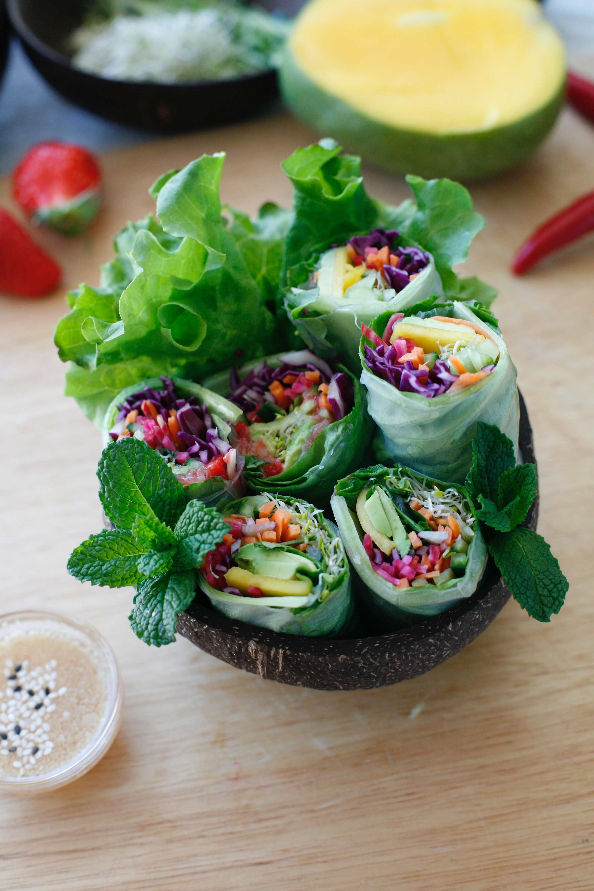

Gỏi cuốn

Food Description
Gỏi cuốn is a meal which is quite flexible in its variety. As its possible to add almost everything you like, its ideal for bigger gatherings as its preparation time consists of preparing the stuff you like!
The vegetables or fillings can be chosen as wished. Here are just some examples.
Ingredients
- 1 (8 ounce) package rice vermicelli
- 8 ounces cooked, peeled shrimp, cut in half lengthwise
- 8 rice wrappers (6.5 inch diameter)
- 1 carrot, julienned
- 1 cup shredded lettuce
- ¼ cup chopped fresh basil
- ½ cup hoisin sauce
- water as needed
Directions
- Bring a medium saucepan of water to boil. Remove from heat. Place rice vermicelli in boiling water, remove from heat, and let soak 3 to 5 minutes, until soft. Drain, and rinse with cold water.
- Fill a large bowl with hot water. Dip one rice wrapper in the hot water for 1 second to soften. Lay wrapper flat, and place desired amounts of noodles, shrimp, carrot, lettuce and basil in the center. Roll the edges of the wrapper slightly inward. Beginning at the bottom edge of wrapper, tightly wrap the ingredients. Repeat with remaining ingredients.
- In a small bowl, mix the hoisin sauce with water until desired consistency has been attained. Heat the mixture for a few seconds in the microwave.
- Serve the spring rolls with the warm dipping sauce.
Back to Homepage